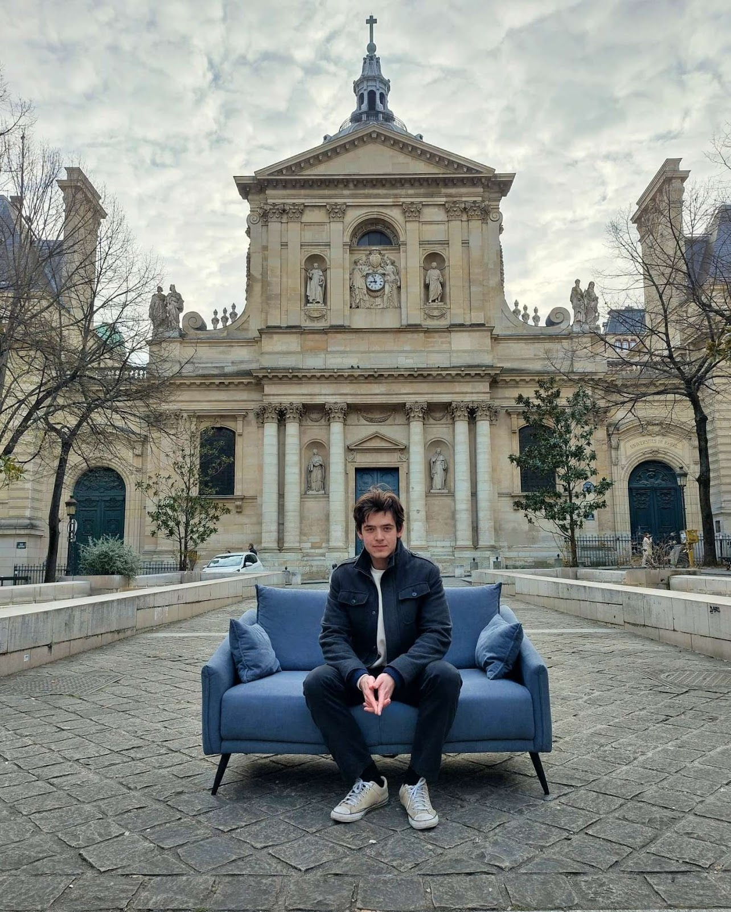
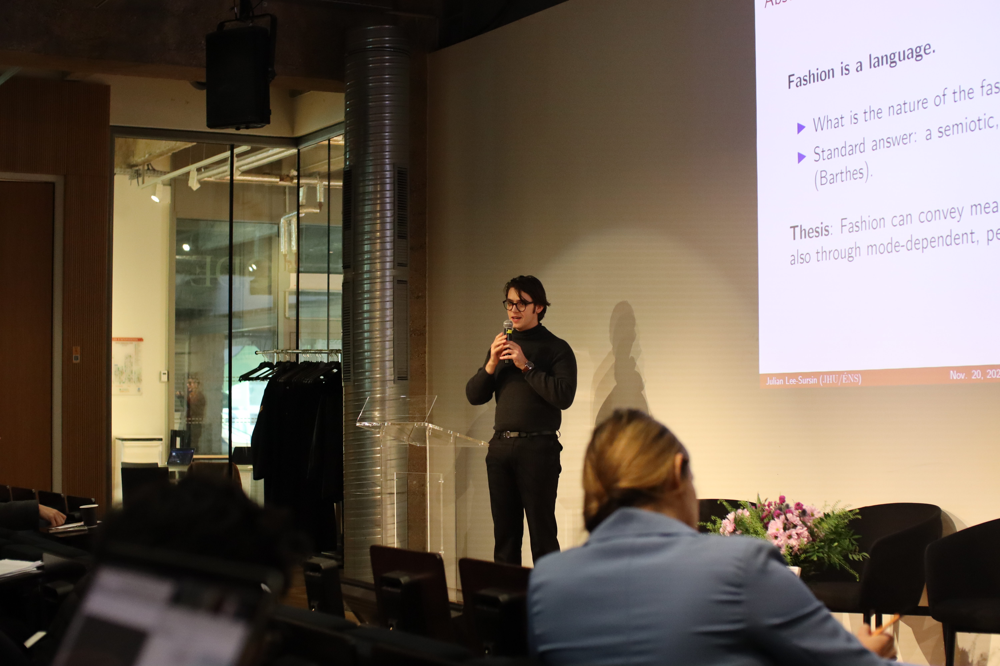

Hi! I'm Julian. I'm currently a master's student in cognitive science at the ENS. Last year, I was a visiting scholar in the department of Comparative Thought and Literature at Johns Hopkins University (you can read about my research visit here). Before that, I did my MPhil at Sorbonne Université and my BA at Oberlin.
Research Areas: Language, Cognitive Science, Philosophy of Science, Epistemology, Mind.

Publication & Preprint
Under Review
Drafts available upon request.
Talk at the Institut Français de la Mode Symposium, Paris, Nov 2025
See my CV for a full list of papers and talks.
See varia to learn more about some of my other interests.